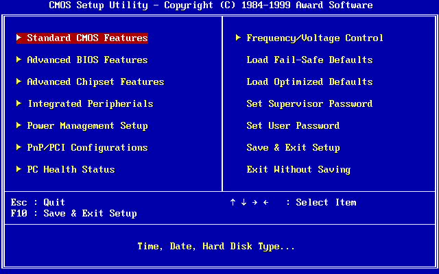
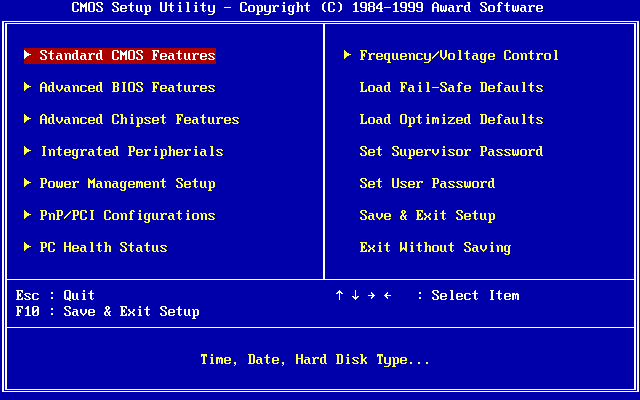
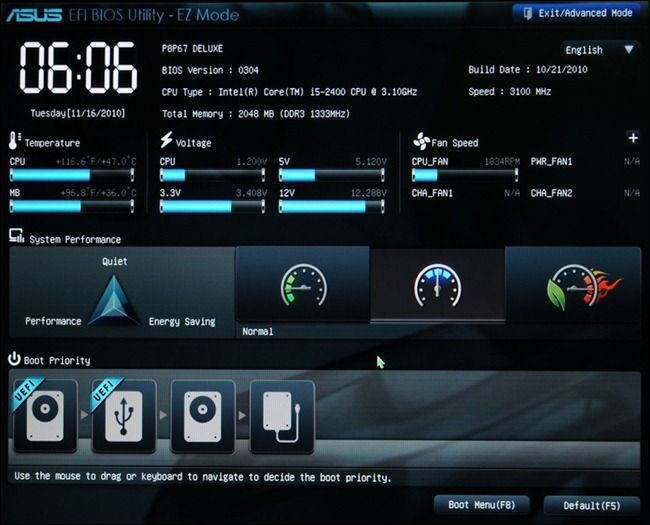
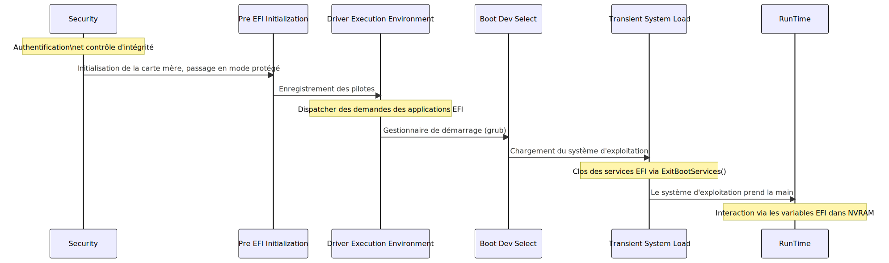

header: 'Systems Course' footer: 'Julien Dauliac -- ynov.casualty925@passfwd.com'
Systems Course
Introduction
Objectives
- Understand the system boot process, from BIOS initialization to kernel execution.
- Gain foundational knowledge of operating system architectures.
- Explore different forms of isolation, including virtual machines, containers, and lambdas, and understand their advantages and disadvantages.
What is an OS?
What does an OS offer?
- Do I need one?
- Not necessarily, but if it's a personal computer (PC), it’s better.
- Why?
- To abstract the hardware.
A Simple System to Start
-
BIOS
-
Kernel booted by BIOS
-
Creation of process 0 by the kernel
-
IDLE = process that does nothing:
while(true) {}

BIOS
- Fun fact: üçé The Mac startup sound comes from an illegal sample from The Beatles‚Äô Sgt. Pepper‚Äôs Lonely Hearts Club Band album.
Hardcore BIOS
 

Corporate BIOS

Casual BIOS

What is a BIOS?
- The first instruction executed by the processor
- Detects and initializes hardware:
- Processors, memory, I/O controllers, peripherals, etc.
- Hardware configuration
- Boots the operating system
- Old term
A Language Misuse
- Extensible Firmware Interface → INTEL
- Unified Extensible Firmware Interface → AMD, American Megatrends, Apple, ARM, Dell, HP, Intel, IBM, Insyde Software, Microsoft, and Phoenix Technologies
UEFI Architecture
- SEC (Security) for executing authentication and integrity control processes (SecureBoot, password, USB token)
- PEI (Pre EFI Initialization) for motherboard and chipset initialization. Switches processor to protected mode.
- DXE (Driver Execution Environment) for driver registration. Manages EFI application requests like a bootloader.
- BDS (Boot Dev Select) for a boot manager like GRUB
- TSL (Transient System Load) for the transition phase where the OS is loaded. EFI services terminate via ExitBootServices(), handing over control to the OS.
- RT (RunTime) once the OS takes over. Interaction with firmware is limited to EFI variables stored in NVRAM.

Security
The BIOS is not our domain, but we must protect the foundations.
- Set a UEFI password
- Enable Secure Boot:
- Signs the bootloader, kernel, and verifies signatures at startup.
An Open Source BIOS üéä
Open Firmware
Firmware Switching (Proprietary Firmware or System76 Open Firmware)
Kernel
- Static code
- Loaded at startup
- Isolates programs from the machine
- Interfaces with user space via
SYSCALL
Kernel Components Summary
| Component | Description | Study Time |
|---|---|---|
| Scheduler | Determines which processes run and for how long using scheduling policies. | ✅ |
| Process Management | Manages processes and threads, deciding CPU allocation and priorities. | ✅ |
| System Calls | Handles requests to the operating system. | ✅ |
| I/O Management | Facilitates interactions between hardware and software. | ❌ |
| Drivers | Manages external devices. | ❌ |
| Inter-Process Communication | Provides communication mechanisms like signals, pipes, and semaphores. | ❌ |
| RAM Sharing Between Processes | Uses virtual memory and paging for isolation and sharing. | ❌ |
Scheduler
What is it?
How do we run multiple processes?
Scheduler and Timer

- Scheduler: Algorithm that uses a timer circuit to share CPU access.
- The kernel interrupts processes.
- The time it takes to give all processes a chance to execute is called an epoch.
- Uses system interruptions to function.
Scheduling Algorithms
- Round Robin (each takes turns)
- Priority-based
- Multi-level feedback queues
As in life, inequalities can be created.
# renice - alter priority of running processes
renice
Example:
On critical systems like rockets üöÄ, each process can have a set priority. This is easier when you know all processes in advance.
System Calls (Syscalls)

-
Communication protocol with the kernel
-
List of numerical identifiers
-
Found in kernel source code:
SYSCALL_DEFINE3(ioctl, unsigned int, fd, unsigned int, cmd, unsigned long, arg) { /* do freaky ioctl stuff */ }
| System Call | rax | rdi | rsi | rdx | r10 | r8 | r9 |
|---|---|---|---|---|---|---|---|
| sys_chroot | 161 | const char* filename | |||||
| sys_chmod | 90 | const char* filename | uid_t user | gid_t group | |||
| sys_mkdir | 83 | const char* pathname | int mode |